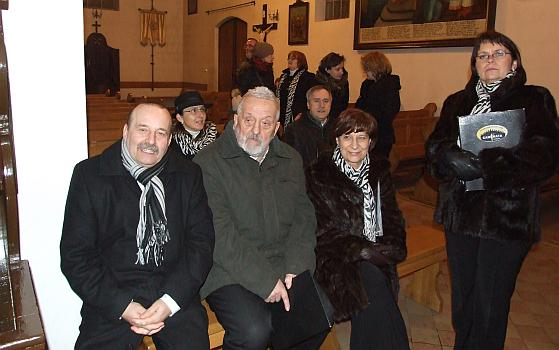
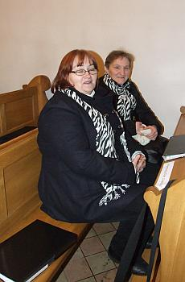
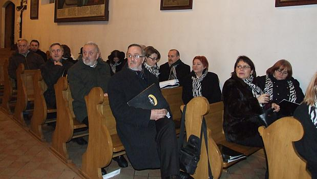
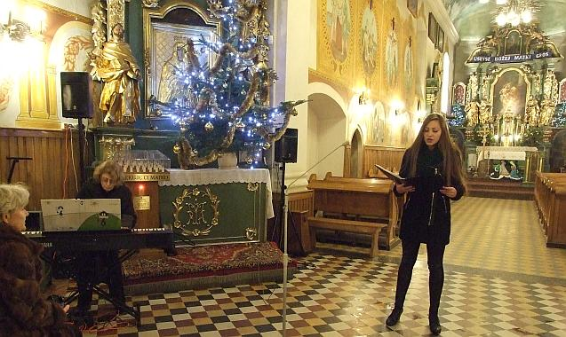
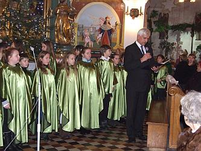
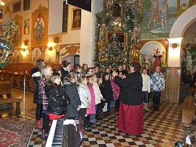
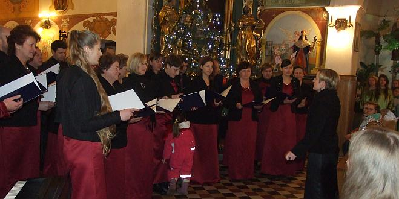
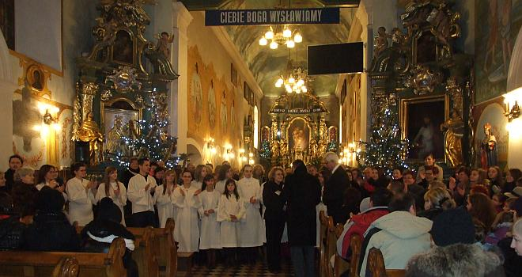

A tymczasem w Cameracie...
.
2014-01-26
Przyjeżdżamy o 17.15. Krótka rozśpiewka i czekamy na mszę. W kościele zimno brrrrr. 
O 18.00 rozpoczyna się Msza Święta, którą chóry oprawiają muzycznie.

Po mszy rozpoczyna się koncert, na którym występują:Chór Publicznej Szkoły Muzycznej I st. w Gdowie pod dyr. Elżbiety Gawryszewskiej
Solistka Roksana Sadowska z akompaniamentem Izabeli Szoty
Chór Szkolny Szk. Podst. w Gdowie i Centrum Kultury w Gdowie pod dyr. Katarzyny Ciężarek
Zespól Muzyczny Gimnazjum im.Św. Brata Alberta w Gdowie pod kier. Marka Suchonia
Chór „Tutte le Corde” z Centrum Kultury w Gdowie pod dyr. Elżbiety Gawryszewskiej
Chór „Cud” z Łapanowa pod dyr. Marka Sobczyka
Chór Camerata z Wieliczki pod dyr. Izabeli Szoty
  
Była też taka chórzystka. Dobrze się przyjrzyjcie, bo ona mamę cały czas widzi ?

Po zakończonym koncercie wszyscy otrzymali pamiątkowe dyplomy i wszystkie chóry zaśpiewały dwie kolędy.


© Stowarzyszenie Muzyczne Chór Camerata Wieliczka
Projekt i wykonanie:  Prowadzenie strony: Małgorzata Wysocka-Cebula
Prowadzenie strony: Małgorzata Wysocka-Cebula